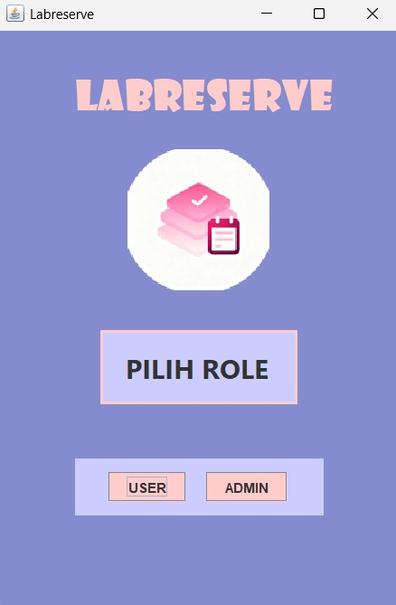
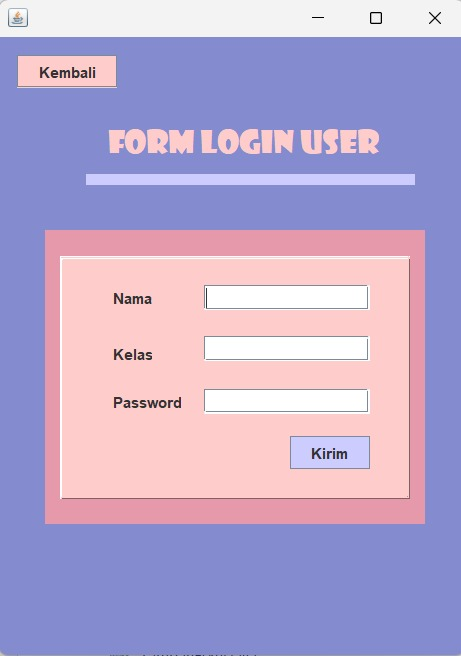
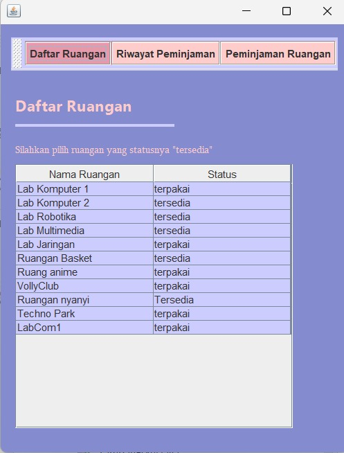
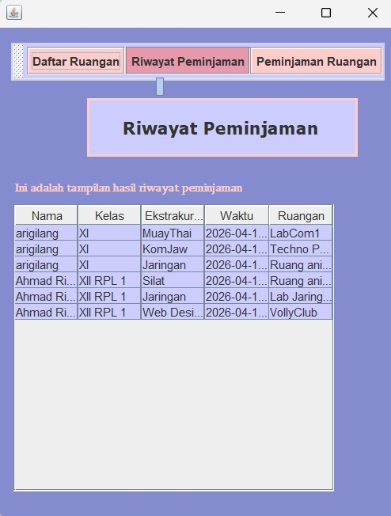
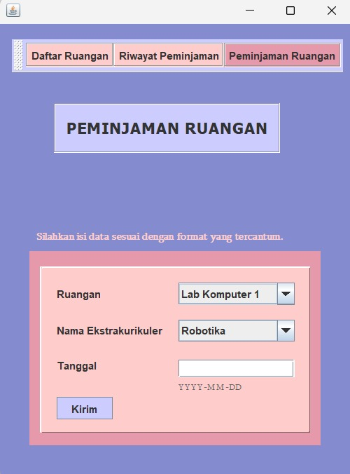
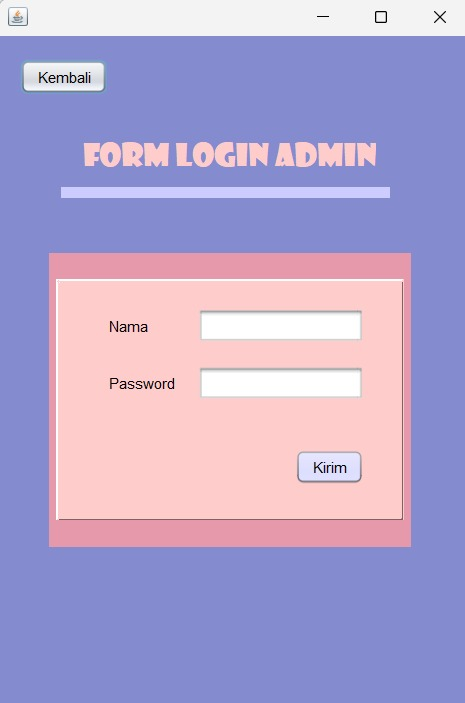
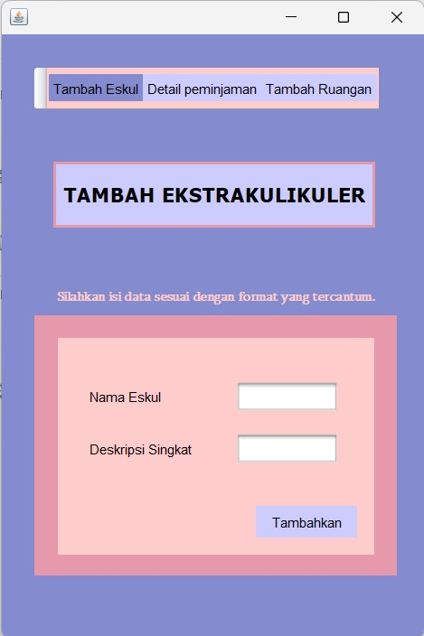
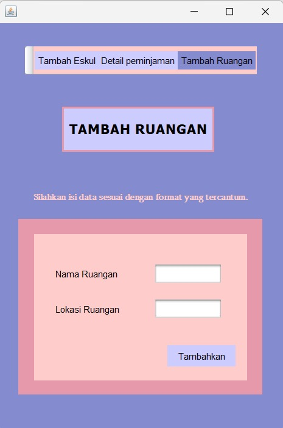
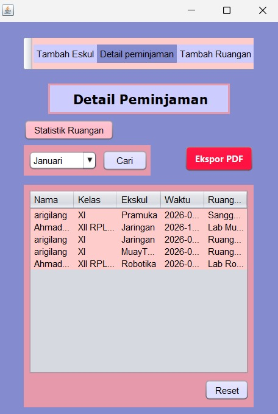

Project ini adalah project untuk tugas sekolah KK2 yaitu membuat sebuah aplikasi sederhana menggunakan Java di Apache NetBeans. Aplikasi berfungsi untuk peminjaman ruangan untuk kegiatan ekstrakurikuler di sekolah.








LabReserve adalah sebuah aplikasi untuk peminjaman ruangan untuk kegiatan ekstrakurikuler di sekolah dan bertujuan untuk mengantisipasi adanya bentrok ruangan antar ekstrakurikuler.
Serta admin dapat mengekspor data bulanan rekapan peminjaman ruangan dalam bentuk file pdf.
Aplikasi ini dibuat di Apache netbeans dan menggunakan semua tools yang ada di netbeans.
Aplikasi ini masih dalam tahap pengembangan, sehingga belum dapat dibuka ke halaman web.